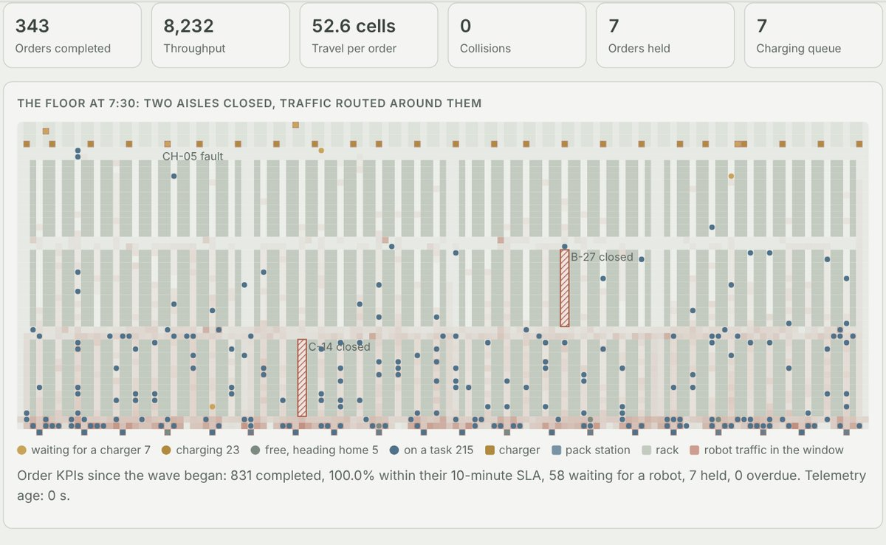
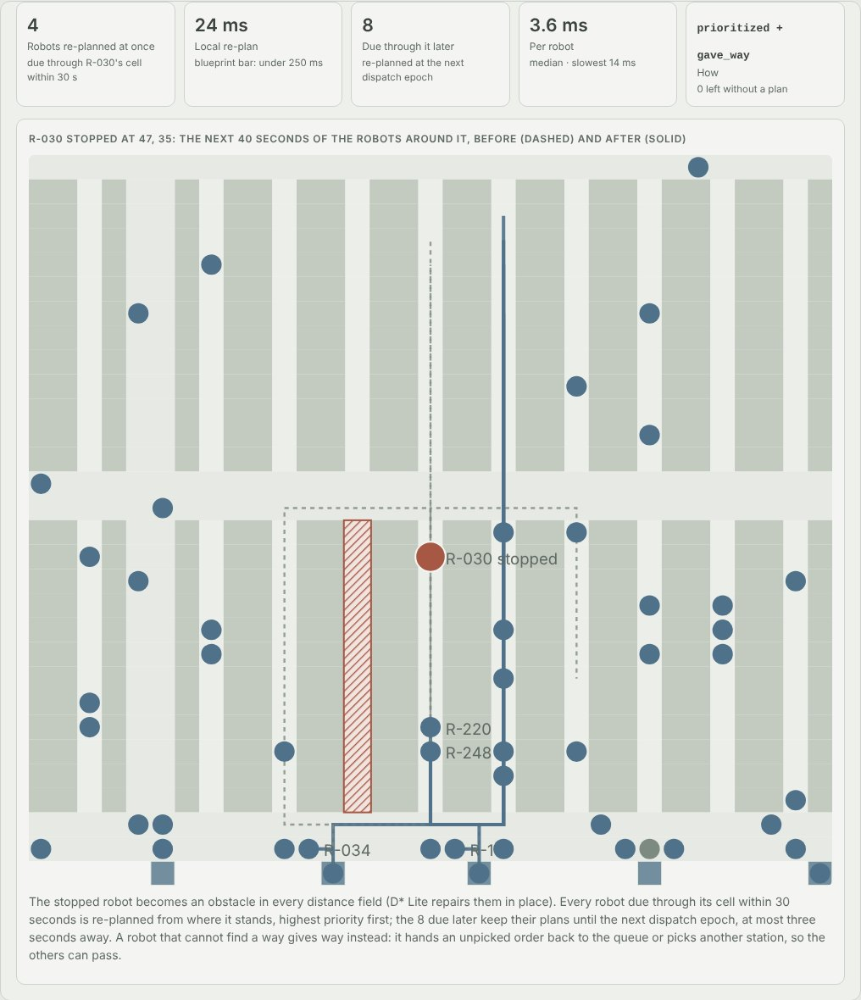
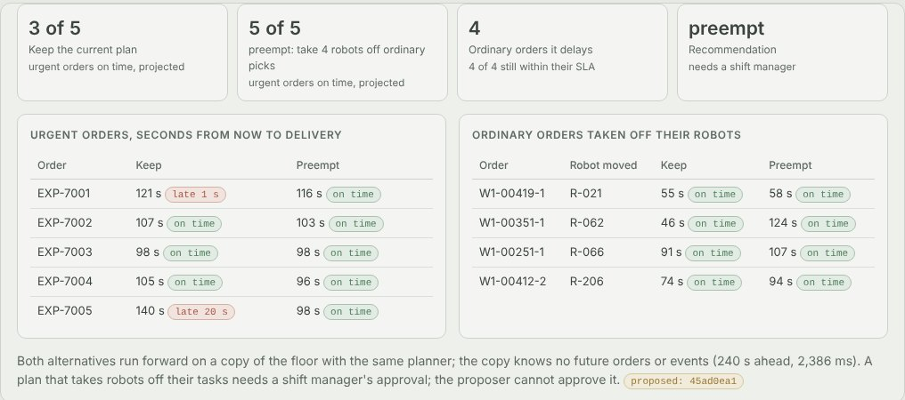
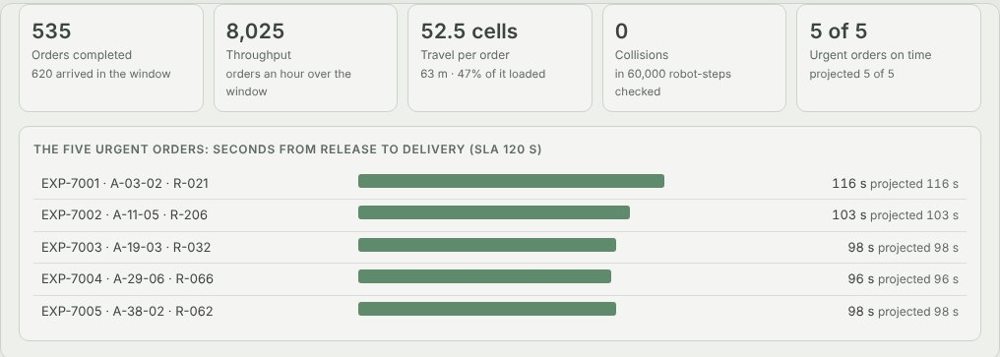
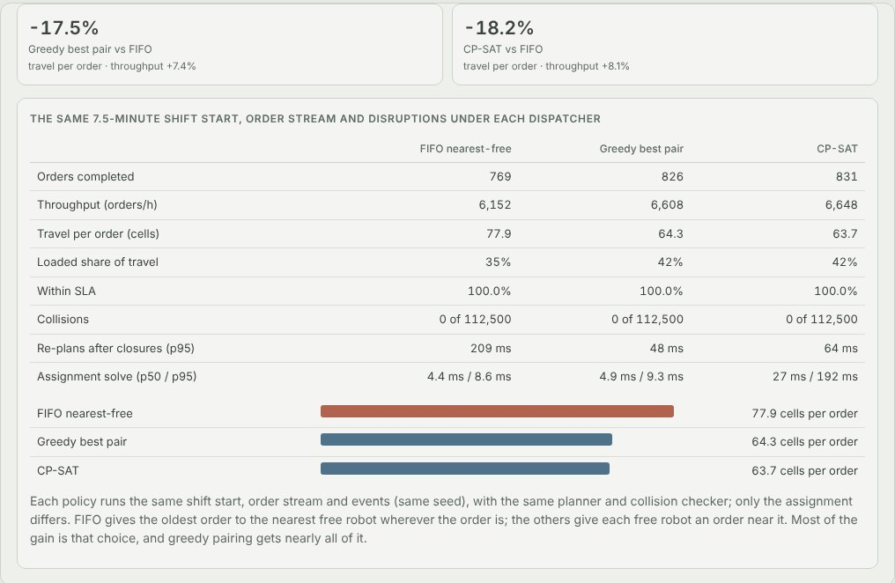

Python · Multi-agent path finding · CP-SAT · 2026-10
Who Moves When an Aisle Closes?
Orchestration for 250 robots in an invented warehouse at peak: two aisles close, a charger fails and a robot is stopped in traffic, every robot is re-planned with no collision in 172,500 robot-steps, all five urgent orders ship on time once a second person approves taking four robots off ordinary work, and against FIFO dispatch the same shift travels 18.2% less per order.

Built from a written blueprint as one vertical slice. The warehouse is simulated: its layout, 250 robots, batteries, orders and disruptions come from a generator in the repository, and the disruptions are injected by telling the generator, which is what lets an independent checker judge every move. The floor executes moves exactly (no wheel slip, no kinematics), so the collision-free result is the planner's, not a real robot's. No real warehouse data. Not built: ROS2 or MQTT robot adapters, a WebSocket telemetry feed, an RL congestion policy, order batching, Kafka, Kubernetes, single sign-on.
01 — The problem
A warehouse running a few hundred mobile robots has single-width aisles, dead-end pack stations and an evening peak that brings more orders than the fleet can finish. Every few seconds something has to decide which robot takes which order, and every robot's route has to keep clear of every other robot's, not just now but for the next minute. Then a forklift blocks an aisle, a charger fails, an operator stops a robot in traffic, or urgent orders arrive, and plans that were fine a second ago are not. Can software keep 250 robots moving without two of them ever meeting, re-plan the ones an event touches in a fraction of a second, cut the distance they travel, and ask a person before it takes robots off their work?
Blueprint 2 of twenty in a fourth build book, built as its demo scenario end to end.
02 — What I built
A Python service on PostgreSQL with a background worker and a web page, started by one docker compose up.
- A simulated warehouse: 3,452 cells of 1.2 m, 123 single-width aisles, two-cell highways, 20 pack stations, 24 chargers and 250 robots whose batteries fade; a floor that moves every robot each second and checks every move.
- A planner that books each robot's whole job against every other robot's reservations by safe interval path planning, with D* Lite keeping its distance estimates exact as aisles close and robots stop.
- Repairs after every event: the robots it touches are re-planned in priority order, a stuck robot gives way, and groups of three or fewer go to conflict-based search.
- Dispatch every three seconds by CP-SAT, measured against FIFO and a greedy pairing.
- A recompute that projects a preemptive plan against the current one and makes it a proposal a second person approves, and a battery fade forecast against each pack's own trend.
03 — How it was built
- 01
A floor that judges every plan
The warehouse is a grid graph: parking bays and chargers at the top, three blocks of aisles one robot wide, two-cell cross-aisles and highways, pack stations at the bottom that are dead ends. Each second the floor moves every robot exactly as told and checks the result for two robots in one cell, two robots trading cells, a robot entering a closed aisle from outside and a stopped robot moving. The planner never reads this code. Across the evaluation's 18 runs, on three warehouses the demo never uses, it checked 4,050,000 robot-steps and found no conflict.
going = {(a, b): i for i, (a, b) in enumerate(zip(pos, moved)) if a != b} for (a, b), i in going.items(): j = going.get((b, a)) if j is not None and i < j: found.append((t, "edge_swap", [self.ids[i], self.ids[j]], a)) - 02
Waiting that costs nothing to search
The first planner was a plain space-time search, where every second a robot might wait is another layer of states; robots queuing at a busy aisle entrance ran it out of budget. Safe interval path planning searches (cell, free interval) instead, so a wait is one step whatever its length, and checks both kinds of conflict against every other robot's booking. A job is a chain of legs, and a drop at a dead-end station is only good if the robot can leave again: when the next robot is already queued at the station's only entrance, the chain asks the drop leg for its next way in.
while td <= b and td + 1 <= b2: o = e.get((td * N + w) * N + c) # someone moving w -> c at td: a swap if (o is None or o == r) and not (ce and (c, w, td) in ce): arr = td + 1 break td += 1 - 03
Who gives way when a robot stops
When an operator stops a robot, it becomes an obstacle: the robots due through its cell within 30 seconds are re-planned at once, highest priority first, and the rest at the next dispatch epoch. A robot that cannot find a way gives way rather than standing in the road: it hands an unpicked order back to the queue, or a loaded robot takes another station. On 72 stops of the robot in the busiest aisle cell, the local re-plan took a median of 34 ms and 204 ms at the 95th percentile; 69 of 72 were under the blueprint's 250 ms. Conflict-based search solved 7 of 8 groups of two and none of the 48 groups of six or more, so it only takes groups of three or fewer.
local = sorted(a for a, tt in first.items() if tt <= t + LOCAL_S) later = sorted(a for a, tt in first.items() if tt > t + LOCAL_S) rec = self.repair(local, t, f"robot {self.ids[r]} paused") self.deferred |= set(later) - 04
Choosing an order near each free robot
Every three seconds CP-SAT assigns free robots to open orders and pack stations at once: each order is worth more as its due time nears and an urgent one more than any ordinary one, minus the empty and loaded travel and a queue penalty at busy stations. The FIFO baseline gives the oldest order the nearest free robot. The first baseline also sent every robot to the nearest station, queued robots at the dead-end stations and gridlocked, which made it a strawman; all three dispatchers now share a station rule. At peak, CP-SAT travelled 22.7–26.2% less per order than FIFO; at a load the fleet keeps up with, 1.7–2.0% less.
m.maximize(sum(v * (bonus[k] - dist[r][tk[k]["pick"]]) for (r, k), v in x.items()) - sum(y[k, s] * (d + 4 * inbound[s]) for k in tasks for d, s in st[k])) - 05
Taking robots off their work needs a second person
Five urgent orders with a two-minute SLA arrive far from the stations. The recompute runs the current plan and a preemptive one forward four minutes on a copy of the floor that knows no future orders: keeping the plan gets 3 of 5 out on time, taking four robots off ordinary orders gets 5 of 5, and those four orders still finish within their own SLA. Because it takes robots off their work it is only a proposal: the engineer cannot approve it, the shift manager does, and a plan computed against a floor that has since moved is refused as stale.
if d["proposed_by"] == ctx.actor_id: raise Problem(403, "proposer_cannot_approve", "a plan that takes robots off their tasks needs a second person") w, floor, fleet = state(c, lock=True) if decision == "approved" and w["state_version"] != d["state_version"]: - 06
Batteries the planner can count on
Each pack's fade is fitted from its charge-cycle records: the square root of cumulative cycle stress (deeper and hotter cycles count more) plus a calendar term, each pack shrunk toward its vendor. Forecast 120 days ahead on held-out packs it was off by 0.14–0.33 points of state of health, against 0.47–0.57 for each pack's own recent trend; 365 days ahead, 0.28–0.67 against 2.28–2.32. Its form is the generator's own law, so this is the best case.
s = p["stress_now"] + p["stress_per_day"] * days_ahead return float(1 - p["theta"] * math.sqrt(max(s, 0.0)) - p["kappa"] * (p["age_years"] + days_ahead / 365.0))
04 — Results
The demo. An operator stops R-030 in the busiest aisle cell at 7:30 into the peak: the four robots due past it within 30 seconds are re-planned in 24 ms, two of them giving their orders back, and the eight due later at the next epoch:

Five urgent orders, the current plan against preemption, projected four minutes ahead:

After the shift manager approves, the urgent orders are delivered as projected:

The same shift start, orders and disruptions under three dispatchers:

On three held-out warehouses (250 robots, a steady and a peak wave of 15 minutes each):
| System | Baseline | |
|---|---|---|
| Conflicts the floor's checker found | 0 in 4,050,000 robot-steps | bar: 99.99% collision-free |
| Travel per order, peak waves | 22.7–26.2% less | FIFO nearest-free |
| Travel per order, steady waves | 1.7–2.0% less | FIFO nearest-free |
| Throughput, peak waves | +8.7% to +9.3% | FIFO nearest-free |
| Local re-plan after a stop, 72 worst-case stops | 34 ms median, 204 ms p95 | bar: 250 ms |
| Battery fade, 120 days ahead (points of SoH) | 0.14–0.33 | 0.47–0.57 own trend |
| Battery fade, 365 days ahead | 0.28–0.67 | 2.28–2.32 own trend |
Honest limits. The distance bar is met only when orders pile up: at a load the fleet keeps up with, CP-SAT travels 1.7–2.0% less than FIFO, and at peak a greedy pairing gets nearly all of its gain. Conflict-based search does not scale past two or three robots in a dense aisle. 3 of the 72 worst-case stops took longer than 250 ms to re-plan, and through the HTTP API a stop takes about 200 ms more than its re-plan, because each request loads and rewrites the whole state. The floor executes moves exactly, so robustness to a slipping or late robot is untested. Orders behind a closed aisle are held, not served: 24 at the end of the demo. The battery model's form is the generator's own.
Checks. 15 tests, including: every kind of conflict is caught by the checker, the D* Lite repair equals a recompute after random closures and openings, forty robots planned one after another never conflict and take turns at a shared dead-end station, conflict-based search resolves two robots meeting head-on in an aisle, CP-SAT's assignment is at least as good as greedy within its constraints, a disrupted shift is collision-free and repeats exactly, a proposer cannot approve and a stale plan is refused, and one operator cannot see another's fleet. The Docker stack was run end to end and reproduced the recorded demo.
05 — What I'd do next
- Robust execution under delays: an action-dependency graph so a slipping or late robot cannot cause a collision, with slips injected in the simulator.
- Real robot adapters (ROS2 or MQTT) and a WebSocket telemetry feed, with the floor's checker run on live telemetry.
- Order batching and slotting, several picks per trip, where most of a real warehouse's remaining travel is.